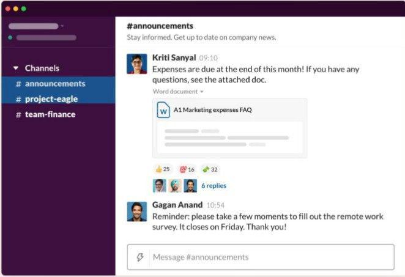

Welcome to your new HQ
Teamwork can be hard, messy, complicated… and still the best way to work. That’s why we made Slack – a place where people get work done, together.

A better way to communicate
Unlike email, conversations in Slack are easy to follow. And they’re more than conversations – you can make calls, share files and even connect with other apps.